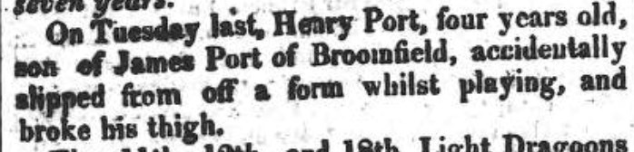

Henry Port c1811 -
[ Home ] | [ Calendar ] | [ Surnames Index ] | [ Census Index ] | [ Family History ]The child of James Port and Ann Richards, Henry Port, the four times great-uncle of Nigel Horne, was born c. 1811 and baptized in Herne, Kent, England on Jul 8, 1811, the same day as his twin brother George. On Mar 31, 1815, he was living in Broomfield, Kent, England.
Parents
- James was born c. 1764
- Ann was born c. 1791
Media
Canterbury Journal March 31, 1815

Kent Baptisms - GBPRS-CANT-B-96124727
England Births & Baptisms 1538-1975 - R_884939899
Kent Baptisms - GBPRS/CANT/B/96580405
Family Tree

Generated by ged2site. Last updated on Jun 11, 2024